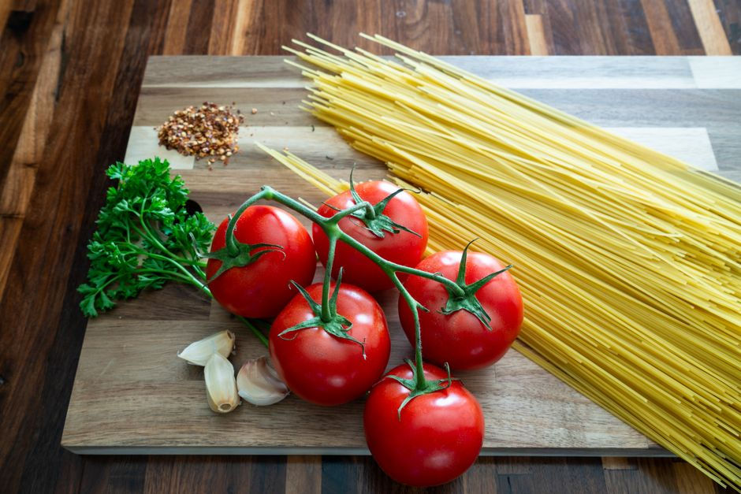

Essential Ingredients for Economical and Nutritious Meals

Photo: Frank Schrader / Pexels
A tight budget does not prevent you from eating well. These staples offer the best value and let you build balanced meals.
Starches and grains
Rice, pasta, potatoes, oats and whole-grain bread are inexpensive, filling and keep for a long time. Whole-grain versions provide more fiber.
Legumes
Lentils, chickpeas and beans, dried or canned, are an affordable source of protein and fiber. Dried legumes cost less but need soaking and thorough cooking. Rinse canned legumes before using.
Eggs
Eggs are an inexpensive source of protein. Cook them well: hard-boiled eggs until firm throughout, fried or scrambled eggs until the white and yolk are firm. Avoid raw or lightly cooked egg dishes, especially if you are pregnant or have a weakened immune system.
Vegetables and fruit
Seasonal vegetables, root vegetables (carrots, potatoes, onions) and frozen vegetables are inexpensive and keep their nutrients well. Canned tomatoes are very useful for sauces and soups.
Dairy and alternatives
Plain yogurt, milk and cheese provide calcium and protein. Compare unit prices rather than package prices.
Meat and fish
Chicken thighs, canned tuna and frozen fish are often cheaper than other meats. Cook poultry to 74 °C (165 °F) in the thickest part.
Spices and herbs
A few spices (cumin, paprika, curry powder) and dried herbs make dishes tastier at little cost.
A sample day
Oatmeal and fruit in the morning; rice, lentils and vegetables at lunch; an omelet and salad or pasta with vegetables for dinner. If you have allergies, specific health needs or are pregnant, ask a health professional for advice.
Recommended products
As an Amazon Associate, I earn from qualifying purchases.